건축산업기사 (2014-05-25 기출문제)
1과목: 건축계획
1. 탑상형(Tower Type) 공동주택에 관한 설명으로 옳지 않은 것은?
- 각 세대에 시각적인 개방감을 줄 수 있다.
- 다른 주거동에 미치는 일조의 영항이 크다.
- 단지내의 랜드마크(land Mark)적인 역할이 가능하다.
- 각 세대에 일조 및 채광 등의 거주환경을 균등하게 제공하는 것이 어렵다.
(정답률: 62%)

2. 다음 설명에 알맞은 거실의 가구 배치 유형은?
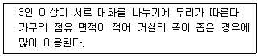
- 원형
- 자유형
- 직선형
- 코너형
(정답률: 60%)
3. 주택의 동선계획에 관한 설명으로 옳지 않은 것은?
- 동선에는 공간이 필요하다.
- 가사노동의 동선은 북쪽에 오는 것이 좋다.
- 주부의 가사노동 단축을 위해 평면에서의 주부의 동선을 짧게 한다.
- 개인, 사회, 가사노동권의 3개 동선을 서로 분리하여 간섭이 없도록 한다.
(정답률: 83%)
4. 사무소 건축의 엘리베이터 계획에 관한 설명으로 옳지 않은 것은?
- 수량 계산 시 대상 건축물의 교통수요량에 적합해야 한다.
- 승객의 층별 대기시간은 평균 운전간격 이하가 되게 한다.
- 초고층, 대규모 빌딩인 경우는 서비스 그룹을 분할하여서는 안된다.
- 건축물의 출입층이 2개 층이 되는 경우는 각각의 교통수요랑 이상이 되도록 한다.
(정답률: 73%)
5. 학교의 운영 방식 중 하나의 교실에서 모든 교과수업을 행하는 방식으로 초등학교 저학년에 가장 적합한 것은?
- 달톤형
- 플래툰형
- 종합교실형
- 교과교실형
(정답률: 91%)
6. 다음 중 일반적인 주택의 부엌에서 냉장고, 개수대, 레인지를 연결하는 작업삼각형의 3변의 길이의 합으로 가장 적정한 것은?
- 3.5m
- 5.0m
- 6.2m
- 6.8m
(정답률: 78%)
7. 다음과 같은 조건에 있는 어느 학교 설계실의 순수율은?
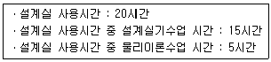
- 25%
- 33%
- 67%
- 75%
(정답률: 74%)
8. 다음의 아파트 평면형식 중 프라이버시 확보가 가장 양호한 것은?
- 홀형
- 집중형
- 편복도형
- 중복도형
(정답률: 74%)
9. 공장건축의 배치형식 중 분관식에 관한 설명으로 옳지 않은 것은?
- 작업장으로의 통풍 및 채광이 양호하다.
- 추후 확장계획에 따른 증축이 용이한 유형이다.
- 각 공장건축물을 동시에 병행할 수 있어 건설 기간의 단축이 가능하다.
- 대지의 형태가 부정형이거나 지형상의 고저차가 있을 때는 적용이 불가능하다.
(정답률: 81%)
10. 쇼핑센터를 구성하는 주요 요소가 아닌 것은?
- 핵점포
- 몰(Mall)
- 터미널 (Terminal)
- 페데스트리언 지대(pedestrian area)
(정답률: 81%)
11. 상점의 매장 및 정면구성에 요구되는 AIDMA법칙의 내용에 속하지 않는 것은?
- Design
- Action
- interest
- Attention
(정답률: 84%)
12. 다음 중 사무소 건축에서 기둥간격을 결정하는 요소와 가장 거리가 먼 것은?
- 책상배치의 단위
- 주차배치의 단위
- 엘리베이터의 설치 대수
- 채광상 층높이에 의한 깊이
(정답률: 71%)
13. 사무소 건축의 평면형태 중 2중지역 배치에 관한 설명으로 옳지 않은 것은?
- 동서로 노출되도록 방향성을 정한다.
- 중규모 크기의 사무소 건축에 적당하다.
- 주계단과 부계단에서 각 실로 들어갈 수 있다.
- 자연채광이 잘 되고 경제성보다 건강, 분위기 등의 필요가 더 요구될 때 가장 적당하다.
(정답률: 72%)
14. 교사의 배치 방법 중 분산병렬형에 관한 설명으로 옳지 않은 것은?
- 구조계획이 간단하다.
- 놀이터와 정원이 생긴다.
- 교실의 환경조건이 균등해진다.
- 넓은 부지를 필요로 하지 않는다.
(정답률: 80%)
15. 상점의 계단에 관한 설명으로 옳지 않은 것은?
- 정방형의 평면일 경우에는 중앙에 설치하는 것이 동선 및 매장 구성에 유리하다.
- 소규모 상점의 경우 계단의 경사를 낮게 할수록 매장 면적의 효율성이 증가한다.
- 검사도는 지니치게 낮은 경우를 제외하고는 높은 경사보다는 낮은 것이 올라가기 쉽다.
- 상점의 깊이가 깊은 직사각형의 평면인 경우 측벽에 따라 계단을 설치하는 것이 시각적 및 공간적 측면에서 바람직하다.
(정답률: 72%)
16. 공간의 레이아웃에 관한 설명으로 가장 알맞은 것은?
- 조형적 아름다움을 부가하는 작업이다.
- 생활행위를 분석해서 분류하는 작업이다.
- 공간에 사용되는 재료의 마감 및 색채계획이다.
- 공간을 형성하는 부분과 일치되는 물체의 평면상 배치 계획이다.
(정답률: 76%)
17. 다음 중 사무소 건축물에서 층고를 낮게 하는 이유와 가장 관계가 먼 것은?
- 건축비를 절감하기 위하여
- 같은 높이에 많은 층수를 얻기 위하여
- 실내 공기조화의 효율을 높이기 위하여
- 엘리베이터의 왕복시간을 단축하기 위하여
(정답률: 75%)
18. 상점의 가구배치에 따른 평면유형 중 다른 유형에 비하여 상품의 전달 및 고객의 동선상 흐름이 가장 빠른 형식으로서 협소한 매장에 적합한 것은?
- 굴절형
- 환상형
- 직렬형
- 복합형
(정답률: 85%)
19. 래드번(Radburn) 계획에서 제시한 5가지 기본원리에 속하지 않는 것은?
- 보도와 차도의 평면적 분리
- 기능에 따른 4가지 종류의 도로 구분
- 자동차 통과교통의 배제를 위한 슈퍼블록의 구성
- 주택단지 어디로나 통할 수 있는 공동의 오픈 스페이스 조성
(정답률: 68%)
20. 공장건축에서 효율적인 자연채광 유입을 위해 고려해야 할 사항으로 옳지 않은 것은?
- 가능한 동일 패턴의 창을 반복하는 것이 바람직하다.
- 벽면 및 색채 계획시 빛의 반사에 대한 면밀한 검토가 요구된다.
- 채광량 확보를 위해 젖빛 유리나 프리즘 유리는 사용하지 않는다.
- 주로 공장은 대부분 기계류를 취급하므로 가능한 창을 크게 설치하는 것이 좋다.
(정답률: 72%)
2과목: 건축시공
21. 공사현장에서 시멘트 창고를 설치할 경우 주의사항으로 틀린 것은?
- 바닥과 지면은 30cm 정도의 거리를 두는 것이 좋다.
- 먼저 쌓은 것부터 사용하도록 한다.
- 출입구 채광창 이외에 공기의 유통을 목적으로 환기창을 설치한다.
- 주위에 배수로를 두어 침수를 방지한다.
(정답률: 82%)
22. 기준점(Bench mark)에 관한 설명 중 틀린 것은?
- 이동의 염려가 없어야 한다.
- 하나의 대지에 2개 이상 설치하지 않아야 한다.
- 공시 완료시까지 존치되어야 한다.
- 공사 착수 전에 설정되어야 한다.
(정답률: 84%)
23. 아연판 지붕 잇기에 동판으로 된 홈통 사용을 피하는 가장 큰 이유는?
- 동판이 부식되기 때문이다.
- 공법이 어렵기 때문이다.
- 공사비가 많이 들기 때문이다.
- 아연판이 침식되기 때문이다.
(정답률: 62%)
24. 그림과 같은 모래질 흙의 줄기초파기에서 파낸 흙을 6톤 트럭으로 운반하려고 할 때 필요한 트럭의 대수로 옳은 것은? (단, 흙의 부피증가는 25%로 하며 파낸 모래질 흙의 단위중량은 1.8t/m3이다.)
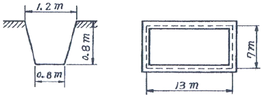
- 10대
- 12대
- 15대
- 18대
(정답률: 74%)
25. 강관비계매기에서 건물높이가 30m 이상일 경우 30m에서 매 3.5m를 증가할 때마다 가산되는 인력품의 비율은?
- 12%
- 10%
- 7%
- 3%
(정답률: 64%)
26. 건설공사표준품셈에서 제시하는 철골재의 할증률로서 틀린 것은?
- 소형형강 :5%
- 봉강 : 3%
- 고장력 볼트 : 3%
- 강판 : 10%
(정답률: 50%)
27. PERT/CPM에 대한 설명으로 틀린 것은?
- PERT는 명확하지 않은 사항이 많은 조건하에서 수행되는 신규사업에 많이 이용된다.
- 통상적으로 CPM은 작업시간이 확립되지 않은 사업에 활용된다.
- PERT는 공기단축을 목적으로 한다.
- CPM은 공사비 절감을 목적으로 한다.
(정답률: 64%)
28. 콘크리트의 긴조수축에 의한 균열을 극소화시키기 위해 건물의 일정 부위를 남겨 놓고 콘크리트 타설을 하고, 초기 수축 후 나머지 부분을 콘크리트 타설할 때 발생하는 줄눈은?
- 신축줄눈(Expansion Joint)
- 조절줄눈(Cont rol Joint)
- 지연줄눈(Oelay Joint)
- 미끄럼줄눈(SI iding Joint)
(정답률: 50%)
29. 미장 공사에서 균열을 방지하기 위한 조치사항으로 틀린 것은?
- 모르타르는 정벌 바름 시 부배합으로 한다.
- 1회의 바름 두께는 가급적 얇게 한다.
- 시공 중 또는 경화 중에 진동 등 외부의 충격을 방지한다.
- 초벌 바름은 완전히 건조하여 균열을 발생 시킨 후 재벌 및 정벌 바름한다.
(정답률: 58%)
30. 보강콘크리트 블록구조에 있어서 내력벽의 배치는 균등을 유지히는 것이 가장 중요한데 그 이유로서 가장 타당한 것은?
- 수직하중을 평균적으로 배분하기 위해시
- 기초의 부동침하를 방지히기 위해서
- 외관상 균형을 잡기 위해서
- 테투리보의 시공을 간단하게 하기 위해서
(정답률: 71%)
31. 다음 건설기계 중 정치식 크레인에 해당하지 않는 것은?
- 타워크레인(Tower crane)
- 러핑크레인(Luffing crane)
- 지브크레인(Jib crane)
- 크롤러크레인(Crawler crane)
(정답률: 66%)
32. 도장 공사의 일반 사항으로 틀린 것은?
- 철은 일 반적으로 재벌, 정벌칠의 2공정으로 한다.
- 나중에 칠할수록 색을 진하게 하여 칠을 안한 부분을 구별한다.
- 주위의 기온이 5℃ 미만, 상대습도가 85% 초과 시는 작업을 중지한다.
- 1회 바름 두께는 얇게 여러 번 칠하고, 급격한 건조는 피해야 한다.
(정답률: 61%)
33. 베인테스트(Vane test)는 무엇을 알아 보기 위한 시험인가?
- 흙의 함수량시험
- 모래의 밀도측정
- 토립자의 비중시험
- 점토의 접착력력시험
(정답률: 75%)
34. 콘크리트 타설량에 따른 압축강도 시험횟수로 옳은 것은? (단, 건축공사표준시방서 기준)
- 50m3 마다 1회
- 120m3 마다 1회
- 180m3 마다 1회
- 250m3 마다 1회
(정답률: 74%)
35. 공사현장에서 원가절감 기법으로 많이 채용되는 것은?
- 가치공학(value engineering) 기법
- LOB(line of balance) 기법
- Tact 기법
- QFD(quality function deployment) 기법
(정답률: 70%)
36. 연약점토 지반에서 흙막이 바깥의 흙의 중량과 적재하중에 견디지 못하고 흙파기 저면의 흙이 붕괴되고 흙막이 배면의 흙이 안으로 밀려 불툭하게 되는 현상을 무엇이라 하는가?
- 보일링(boi1ing)
- 파이핑(piping)
- 압밀침하
- 히빙(heaving)
(정답률: 72%)
37. 커튼월(curtain wall)에 대한 설명으로 틀린 것은?
- 내력벽에 사용된다.
- 공장생산이 가능하다.
- 고층 건축에 특히 사용된다.
- 패스너(Fastener)를 이용한 볼트조임으로 구조물에 고정시킨다.
(정답률: 79%)
38. 아스팔트 품질시험항목과 가장 거리가 먼 것은?
- 비표면적 시험
- 침입도
- 강온비
- 신도 및 연화점
(정답률: 62%)
39. 흙의 휴식각과 연관한 터파기 경사각도로 옳은 것은?
- 휴식각의 1/2로 한다.
- 휴식각과 같게 한다.
- 휴식각의 2배로 한다.
- 휴식각의 3배로 한다.
(정답률: 65%)
40. 배수공업 중 강제배수 방법이 아닌 것은?
- Well Point 공업
- 전기삼투 공업
- 진공 Deep Well 공업
- 집수정 공업
(정답률: 56%)
3과목: 건축구조
41. 보의 폭 b = 300mm, fck = 21Mpa인 단근보롤 강도설계법으로 설계하고자 할 때 균형상태에서 이 보의 콘크리트 암축내력은 약 얼마인가? (단, 등가응력블록의 깊이 a = 120mm임)
- 536.2kN
- 642.6kN
- 720.4kN
- 825.8kN
(정답률: 55%)
42. 그림과 같은 캔틸레버보에서 집중하중 P가 작용하는 자유단에 생기는 처짐은? (단, 부재의 EI는 일정)
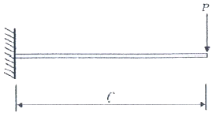
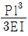
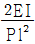
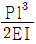
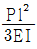
(정답률: 60%)
43. 다음 기초 구조에 대한 기술 중 옳지 않은 것은?
- 복합기초는 2개의 기둥을 1개의 기초판으로 받게 한 것이다.
- 잠함기초는 구조물의 기초를 우물통형식으로 하여 무리말뚝의 역할을 하도록 한 것이다.
- 연속기초는 건축물의 밑바닥 전부를 두꺼운 기초판으로 구성한 기초이다.
- 독립기초는 기둥을 단독으로 지지하는 기초이다.
(정답률: 65%)
44. 그림과 같은 구조물의 지점 A의 휨모멘트는?
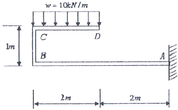
- -20 kNㆍm
- -40 kNㆍm
- -60 kNㆍm
- -80 kNㆍm
(정답률: 36%)
45. 그림과 같은 겔버보에서 C점의 반력 RC의 값으로 옳은 것은?
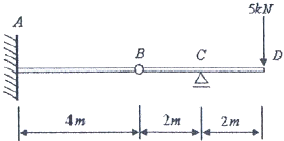
- 5 kN
- 10 kN
- 15 kN
- 20 kN
(정답률: 50%)
46. 휨모멘트도와 전단력도 사이의 관계 중 옳지 않은 것은?
- 휨모멘트도가 3차 곡선일때 전단력도는 2차 곡선변화
- 휨모멘트도가 2차 곡선일때 전단력도는 1차 직선변화
- 휨모멘트도가 1차 직선변화일때 전단력도의 값은 일정
- 휨모멘트도가 일정한 값일때 전단력도의 값은 3차 곡선 변화
(정답률: 52%)
47. 그림과 같은 단순보의 A점 및 B점에서의 반력은? (단, cos45° = 0.7로 계산)
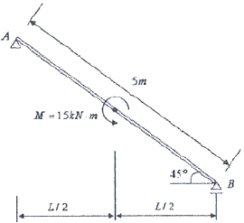
- RA = 3.3kN(↑), RB = 3.3kN(↓)
- RA = 3.3kN(↓), RB = 3.3kN(↑)
- RA = 4.3kN(↑), RB = 4.3kN(↓)
- RA = 4.3kN(↓), RB = 4.3kN(↑)
(정답률: 46%)
48. 다음 그림과 같은 평면도를 가진 바닥구조의 슬래브 두께가 100mm, 보의 폭 bw가 250mm라면 이 슬래브를 구성하고 있는 T형보의 유효플랜지 폭은?
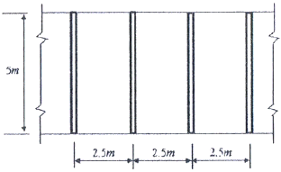
- 1000mm
- 1250mm
- 1850mm
- 2500mm
(정답률: 56%)
49. 보통콘크리트에 D19 철근이 사용될 때 인장이형철근의 기본정착길이는 약 얼마인가? (단, 경량콘크리트계수 = 1, fck = 27MPa, fy = 300MPa)
- 290mm
- 330mm
- 660mm
- 820mm
(정답률: 58%)
50. 강도설계법에서 처짐계산을 하지 않을 때 그림과 같은 2스팬 연속보의 최소춤은 약 얼마인가? (단, fck = 21MPa, fy = 400MPa, wc = 2300kg/m3)
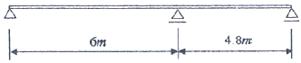
- 750mm
- 375mm
- 324mm
- 285mm
(정답률: 36%)
51. 유효두께 l00mm인 슬래브에 배근된 철근비가 0.0035일 경우 슬래브 폭 1m당 필요한 최소 철근량은?
- 240mm2
- 280mm2
- 350mm2
- 420mm2
(정답률: 56%)
52. 기초 저면 2.5m×2.5m의 독립기초에 편심하중이 작용하여 축방향력 400kN(기초자중, 상재하중 및 흙의 중량 포함), 모멘트 120kNㆍm을 받을 경우, 기초 저면의 편심거리는 얼마인가?
- 0.2m
- 0.3m
- 0.4m
- 0.5m
(정답률: 49%)
53. 그림과 같은 구조물의 부정정 차수는?
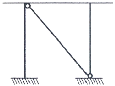
- 1차 부정정
- 2차 부정정
- 3차 부정정
- 4차 부정정
(정답률: 47%)
54. 기둥 또는 벽의 힘을 지중에 전달하기 위하여 기초가 펼쳐진 부분을 의미하는 것은?
- 지정
- 푸팅
- 피어
- 잡석
(정답률: 51%)
55. 그림과 같은 하중을 받는 기초에서 기초 지반면에 일이나는 최대압축응력도는?
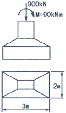
- 150 kPa
- 180 kPa
- 210 kPa
- 250 kPa
(정답률: 52%)
56. 그림에서 빗금친 부분의 X축에 대한 단면2차반경은?
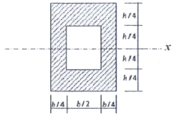
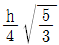
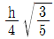
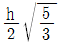
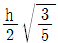
(정답률: 38%)
57. 그림과 같은 직사각형 단면의 x축과 y축에 대한 단면상승 모멘트는?
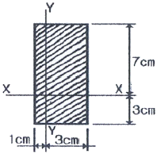
- 40cm4
- 80cm4
- 120cm4
- 160cm4
(정답률: 42%)
58. 그림과 같은 부정정 구조물을 해석하기 위해 모멘트 분배법을 사용할 때 B점 왼쪽단에 걸리는 분배율(DF)은? (단, 구조물의 EI는 일정하다.)
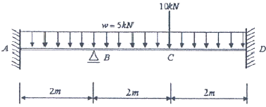
- 0.33
- 0.44
- 0.55
- 0.67
(정답률: 28%)
59. 단면 b×h(200mm×300mm), ℓ = 6m인 단순보에 중앙집중하중 P가 작용할 때 P의 허용값은? (단, fb = 9MPa이다.)
- 18kN
- 21kN
- 24kN
- 27kN
(정답률: 28%)
60. 극한강도설계법에서 전단력과 휨 모멘트만이 작용하는 다음 부재의 콘크리트 설계전단강도를 구하면? (단, 경량콘크리트계수 = 1, fck = 24MPa)
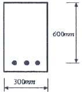
- 110kN
- 125kN
- 132kN
- 147kN
(정답률: 33%)
4과목: 건축설비
61. 도시가스사용시설에서 가스계량기와 전기계량기는 최소 얼마 이상의 거리를 유지하여야 하는가?
- 15m
- 30cm
- 45cm
- 60cm
(정답률: 46%)
62. 복사난방에 관한 설명으로 옳지 않은 것은?
- 복사열에 의해 난방하므로 쾌감도가 높다.
- 온수관이 매입되므로 시공, 보수가 용이하다.
- 열용량이 크기 때문에 방열량 조절에 시간이 걸린다.
- 실내에 방열기롤 설치하지 않으므로 바닥이나 벽면을 유용하게 이용할 수 있다.
(정답률: 62%)
63. 스프링클러설비의 배관에 관한 설명으로 옳지 않은 것은?
- 가지배관은 각 충을 수직으로 관통하는 수직배관이다.
- 급수배관은 수원 및 옥외송수구로부터 스프링클러헤드에 급수하는 배관이다.
- 교차배관이란 직접 또는 수직배관을 통하여 가지배관에 급수하는 배관이다.
- 신축배관은 가지배관과 스프링클러헤드를 연결하는 구부림이 용이하고 유연성을 가진 배관이다.
(정답률: 61%)
64. 국소식 급탕방식에 관한 설명으로 옳지 않은 것은?
- 열손실이 적다.
- 배관에 의해 필요개소에 어디든지 급탕할 수 있다.
- 건물 완공 후에도 급탕 개소의 증설이 비교적 쉽다.
- 용도에 따라 필요한 개소에서 필요한 온도의 탕을 비교적 간단하게 얻을 수 있다.
(정답률: 36%)
65. 디음 중 관 트랩에 속하지 않는 것은?
- P트랩
- S트랩
- U트랩
- 벨트랩
(정답률: 67%)
66. 다음의 공기조화방식 중 전공기방식에 해당하는 것은?
- 유인 유닛빙식
- 멀티좀 유닛방식
- 팬코일 유닛방식
- 패키지 유닛방식
(정답률: 52%)
67. 교류전동기에 해당하지 않는 것은?
- 동기전동기
- 복권전동기
- 3상 유도전동기
- 분상 기동형진동기
(정답률: 67%)
68. 건축물에 설치되는 예비전원설비에 해당하지 않는 것은?
- 축전지 설비
- 자기발전설비
- 수ㆍ변전설비
- 무정전 전원설비
(정답률: 57%)
69. 건구온도 18℃, 상대습도 60% 인 공기가 여과기를 통과한 후 가열 코일을 통과하였다. 통과 후의 공기 상태는?
- 건구온도 증가, 비체적 감소
- 건구온도 증가, 엔탈피 감소
- 건구온도 증가, 상대습도 증가
- 건구온도 증가, 습구온도 증가
(정답률: 43%)
70. 전기설비에서 다음과 같이 정의되는 것은?
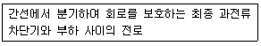
- 나도체
- 분기회로
- 절연전선
- 인입케이블
(정답률: 73%)
71. 기구배수단위 산정의 기준이 되는 것은?
- 싱크
- 세면기
- 소변기
- 대변기
(정답률: 74%)
72. 통기수직관을 설치한 배수ㆍ통기계통에 이용되며, 2개 이상의 기구트랩에 공통으로 하나의 통기관을 설치하는 통기방식은?
- 습통기방식
- 루프통기방식
- 신정통기방식
- 각개통기방식
(정답률: 62%)
73. 정화조에서 유입된 오수를 혐기성균에 의하여 소화 작용으로 분리침전이 이루어지도록 하는 곳은?
- 산화조
- 부패조
- 소독조
- 여과조
(정답률: 58%)
74. 어느 균등 점관원과 2m 떨어진 곳의 직각면 조도가 100[lx]일 때, 이 광원과 1m 떨어진 곳의 직각면 조도는?
- 200[lx]
- 300[lx]
- 400[lx]
- 600[lx]
(정답률: 64%)
75. 난방용 열매 중 증기에 관한 설명으로 옳지 않은 것은?
- 증기의 포화온도는 압력의 변화에 따라 변한다.
- 포화증기의 비체적은 증기의 압력이 증가할수록 증가한다.
- 증기의 압력이 증가하면 포화증기가 갖게 되는 잠열은 감소하게 된다.
- 건포화증기를 다시 가열하면 증기의 온도는 포화온도보다 높아지며 체적은 더욱 증가한다.
(정답률: 36%)
76. 다음은 옥내소화전의 화재안전기준에 관한 내용이다. ( )안에 알맞은 것은?
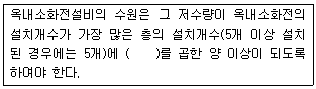
- 1.3m3
- 2.6m3
- 5m3
- 7m3
(정답률: 72%)
77. 온수난방설비에 사용되는 팽창탱크의 기능에 관한 설명으로 가장 알맞은 것은?
- 기포가 온수의 흐름과 같은 방향으로 흐르도록 한다.
- 온수의 저장소로 급탕수전을 열었을 때 온수가 즉시 나오도록 한다.
- 운전 중 장치내의 온도상승으로 생기는 물의 체적팽창과 그 압력을 흡수한다.
- 공급관과 환수관의 마찰저항값을 유사하게 하여 순환 온수가 균등하게 흐르도록 한다.
(정답률: 61%)
78. 급수배관의 설계 및 시공상 주의사항으로 옳지 않은 것은?
- 급수배관의 최소 관경은 원칙적으로 32mm로 한다.
- 주배관에는 적당한 위치에 플랜지 이음을 하여 보수ㆍ점검을 용이하게 한다.
- 수격작용이 발생할 염려가 있는 급수계통에는 에어챔버나 워터 햄머 방지기 등의 완충장치를 설치한다.
- 수평배관에는 공기가 정체하지 않도록 하며, 어쩔 수 없이 공기 정체가 일어나는 곳에는 공기빼기밸브를 설치한다.
(정답률: 63%)
79. 급수방식 중 고가수조방식에 관한 설명으로 옳지 않은 것은?
- 급수압력이 일정하다.
- 대규모의 급수 수요에 쉽게 대응할 수 있다.
- 단수시에도 일정량의 급수를 계속할 수 있다.
- 위생성 및 유지ㆍ관리 측면에서 가장 바림직한 방식이다.
(정답률: 71%)
80. 다음과 같은 벽체에서 관류에 의한 열손실량은?
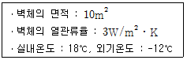
- 360W
- 540W
- 780W
- 900W
(정답률: 63%)
5과목: 건축관계법규
81. 건축허가신청에 필요한 설계도서 중 건축계획서에 표시하여야 할 사항에 속하지 않는 것은?
- 주차장 규모
- 건축물의 용도별 면적
- 공개공지 및 조경계획
- 지역ㆍ지구 및 도시계획사항
(정답률: 39%)
82. 지하식 또는 건축물식 노외주차장의 차로에 관한 기준 내용으로 옳지 않은 것은?
- 높이는 주차바닥면으로부터 2.3m 이상으로 하여야 한다.
- 경사로의 종단경사도는 직선 부분에서는 14퍼센트를 초과하여서는 아니 된다.
- 경사로의 양쪽 벽면으로부터 30cm 이상의 지점에 높이 10cm 이상 15cm 미만의 연석을 설치하여야 한다.
- 주차대수 규모가 50대 이상인 경우의 경사로는 너비 6m 이상인 2차로를 확보하거나 진입차로와 진출차로를 분리하여야 한다.
(정답률: 61%)
83. 건축물을 건축하는 경우 국토교통부령으로 정하는 구조 기준 등에 따라 그 구조의 안전을 확인하여야 하는 대상 건축물 기준으로 옳지 않은 것은?(2022년 02월 27일 확인된 규정 적용됨)
- 층수가 2층 이상인 건축물
- 높이기 13m 이상인 건축물
- 처마높이가 9m 이상인 건축물
- 연면적이 500m2 이상인 건축물
(정답률: 43%)
84. 연면적 200m2를 초과하는 건축물에 설치하는 계단에 관한 기준 내용으로 옳지 않은 것은?
- 너비가 4m를 넘는 계단에는 계단의 중간에 너비 2m 이내마다 난간을 설치할 것
- 높이가 3m를 넘는 계단에는 높이 3m 이내마다 너비 1.2m 이상의 계단창을 설치할 것
- 높이가 1m를 넘는 계단 및 계단창의 앙옆에는 난간(벽 또는 이에 대치되는 것 포함)을 설치할 것
- 계단의 바닥 마감면부터 상부 구조체의 하부 마감면까지의 연직방향의 높이는 2.1m 이상으로 할 것
(정답률: 65%)
85. 기계식주차장치의 안전기준과 관련하여 중형 기계식주차장에 요구되는 기계식주차장치 출입구의 크기 기준으로 옳은 것은?
- 너비 2.1m 이상, 높이 1.6m 이상
- 너비 2.1m 이상, 높이 1.9m 이상
- 너비 2.3m 이상, 높이 1.6m 이상
- 너비 2.3m 이상, 높이 1.9m 이상
(정답률: 47%)
86. 막다른 도로의 길이가 8m인 경우, 이 도로가 건축법상 도로로 인정받기 위한 최소 너비는?
- 2m
- 3m
- 4m
- 5m
(정답률: 50%)
87. 다음의 옥상광장 등의 설치와 관련된 기준 내용 중 ( )안에 해당되지 않는 것은?
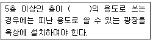
- 판매시설 중 상점
- 판매시설 중 소매시장
- 의료시설 중 격리병원
- 위락시설 중 주점영업
(정답률: 53%)
88. 건축법령상 다음과 같이 정의되는 것은?
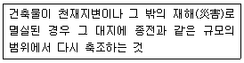
- 신축
- 증축
- 재축
- 개축
(정답률: 79%)
89. 바닥면적이 1000m2인 의료시설 병실에서 환기를 위하여 설치하는 창문 등의 면적은 최소 얼마 이상으로 하여야 하는가? (단, 기계환기장치 및 중앙관리방식의 공기조화설비를 설치하지 않은 경우)
- 40m2
- 50m2
- 60m2
- 70m2
(정답률: 61%)
90. 건축물에 설치하는 경계벽 및 칸막이벽을 내화구조로 하고, 지붕밑 또는 바로 윗층의 바닥판까지 닿게 하여야 하는 대상에 속하지 않는 것은?
- 학교의 교실간 칸막이역
- 도서관의 열람실간 칸막이벽
- 다세대주택의 각 세대간 경계벽
- 다가구주택의 각 가구간 경계벽
(정답률: 67%)
91. 건축울의 소유자나 관리자는 건축울이 재해로 멸실된 경우 멸실 후 최대 며칠 이내에 신고하여야 하는가?
- 5일
- 10일
- 20일
- 30일
(정답률: 74%)
92. 문화 및 집회시설 중 공연장의 개별관람석 출구의 유효 너비의 합계는 최소 얼마 이상이어야 하는가? (단, 개별관람석의 바닥면적은 300m2 이다.)
- 1.5m
- 1.8m
- 3.0m
- 3.3m
(정답률: 26%)
93. 일조 등의 확보를 위한 건축물의 높이 제한과 관련하여 일반주거지역에서 건축물을 건축하는 경우, 건축물의 높이 9m 이하인 부분은 정북 방향으로의 인점 대지경계선으로부터 최소 얼마 이상의 거리를 띄어야 하는가?
- 1m
- 1.5m
- 2m
- 2.5m
(정답률: 45%)
94. 용도지역의 세분 중 저층주택을 중심으로 편리한 주거환경을 조성하기 위하여 필요한 지역은?
- 준주거지역
- 제2종 전용주거지역
- 제1종 일반주거지역
- 제2종 일반주거지역
(정답률: 62%)
95. 다음과 같은 조건에 있는 노외주차장에 설치하여야 하는 차로의 최소 너비는?
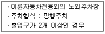
- 3.3m
- 3.5m
- 4.5m
- 6.0m
(정답률: 47%)
96. 건축물과 해당 건축물의 건축법상 용도의 연결이 옳지 않은 것은?
- 공관 - 단독주택
- 기숙사 - 공동주택
- 오피스텔 - 업무시설
- 골프연습장 - 문화 및 집회시설
(정답률: 59%)
97. 토지의 이용 및 건축물의 용도ㆍ건폐율ㆍ용적혈ㆍ높이 등에 대한 용도지역의 제한을 강화 또는 완화하여 적용함으로써 용도지역의 기능을 증진시키고 미관ㆍ경관ㆍ안전 등을 도모하기 위하여 도시ㆍ군관리계획으로 결정하는 지역은?
- 용도구역
- 용도지구
- 광역구역
- 도시ㆍ군계획지역
(정답률: 61%)
98. 다음과 같은 대지의 대지면적은?
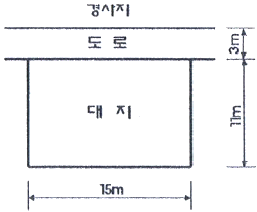
- 135cm2
- 150cm2
- 157.5cm2
- 165cm2
(정답률: 64%)
99. 부설주차장의 설치대상시설물이 판매시설인 경우, 부설 주차장 설치 기준으로 옳은 것은?
- 시설면적 100m2당 1대
- 시설면적 150m2당 1대
- 시설면적 200m2당 1대
- 시설면적 300m2당 1대
(정답률: 67%)
100. 다음 중 허가대상에 속하는 용도변경은?
- 문화 및 집회시설군에서 영업시설군으로의 용도변경
- 주거업무시설군에서 근린생활시설군으로의 용도변경
- 산업 등의 시설군에서 전기통신시설군으로의 용도변경
- 교육 및 복지시설군에서 근린생활시설군으로의 용도변경
(정답률: 42%)